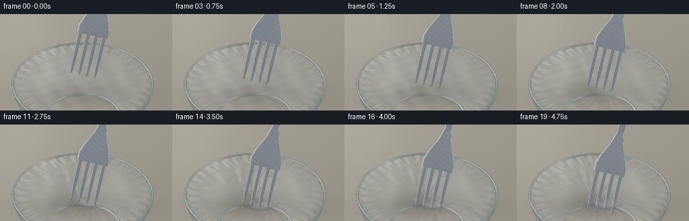
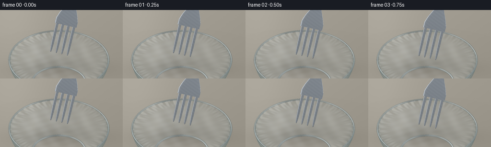

CODING AGENTS AS PIXEL WORLD MODELS
traex/GPT-6.1-Sol · phygen_023
点击播放 · 原生 RGB 像素
逐轮保存的候选
回放视频、检查图与代码变化。
每份候选均可单独播放。实际图片检查记录在下方工具轨迹中。
候选 01播放与检查图
点击播放 · 原生 RGB 像素


展开代码变化
--- 上一保存版本
+++ 本次保存版本
@@ -0,0 +1,292 @@
+"""Procedural macro shot: four steel tines stretching and piercing cling film.
+Only analytic geometry, a local numpy rasterizer, and PIL antialiasing are used.
+"""
+from pathlib import Path
+import json
+import numpy as np
+from PIL import Image, ImageFilter
+import artifact_io
+
+ROOT=Path(__file__).resolve().parent
+SPEC=json.loads((ROOT/'task_spec.json').read_text())
+S=3; WIDTH=SPEC['width']*S; HEIGHT=SPEC['height']*S
+SCALE=83*S
+CAM=np.array([0.,-0.805,0.593]); UP=np.array([0.,0.593,0.805])
+CENTER=np.array([0.,0.,0.50])
+LX=np.array([.93,-.36756,0.]); LX/=np.linalg.norm(LX)
+LONG=np.array([.24,.607,.7578]); LONG-=LX*np.dot(LONG,LX); LONG/=np.linalg.norm(LONG)
+NORMAL=np.cross(LX,LONG)
+R=1.25
+
+def unit(a): return a/np.maximum(np.linalg.norm(a,axis=-1,keepdims=True),1e-12)
+def project(p):
+ d=p-CENTER
+ return np.stack([WIDTH*.48+d[...,0]*SCALE, HEIGHT*.50-(d@UP)*SCALE, d@CAM],axis=-1)
+
+def env(ref,p):
+ # Smooth photographic studio environment reflected by polished surfaces.
+ z=ref[...,2]
+ base=np.stack([84+34*z,90+36*z,95+40*z],axis=-1)
+ a=np.exp(-((ref[...,0]+.32)/.38)**4-((ref[...,1]-.56)/.55)**4-((z-.67)/.55)**4)
+ b=np.exp(-((ref[...,0]-.78)/.15)**2-((ref[...,1]+.14)/.55)**2)
+ c=np.exp(-((ref[...,0]+.82)/.12)**2-((z-.35)/.55)**2)
+ dark=np.exp(-((ref[...,0]-.14)/.16)**2-((ref[...,1]-.2)/.72)**2)
+ return np.clip(base+(155*a+140*b+115*c-48*dark)[...,None],18,252)
+
+def shade(n,p,kind):
+ n=unit(n)
+ facing=n@CAM
+ n=np.where((facing<0)[...,None],-n,n)
+ facing=np.abs(facing)
+ refl=2*(n@CAM)[...,None]*n-CAM
+ light=np.array([-.45,-.3,.84]); light=unit(light)
+ diff=np.clip(n@light,0,1)
+ if kind=='metal':
+ reflected=env(refl,p)
+ # Extremely fine fixed grain, like brushed stainless steel.
+ grain=1.8*np.sin(p[...,0]*1600+p[...,2]*100)+.65*np.sin(p[...,1]*2800)
+ color=reflected*.91 + (14+12*diff)[...,None]+grain[...,None]
+ return np.clip(color,0,255),np.ones_like(facing)
+ if kind=='glass':
+ fres=.045+.80*(1-facing)**4
+ reflected=env(refl,p)
+ color=reflected*.62+np.array([70,85,83])
+ return np.clip(color,0,255),np.clip(.08+fres*.72,0,.82)
+ if kind=='rim':
+ fres=.10+.65*(1-facing)**3
+ color=env(refl,p)*.79+np.array([32,40,38])
+ return np.clip(color,0,255),np.clip(.24+fres*.76,0,.94)
+ # Thin clear polyethylene: mostly transmits, with soft silver reflections.
+ fres=.026+.88*(1-facing)**5
+ light_ref=env(refl,p)
+ shine=np.clip((light_ref.mean(axis=-1)-135)/105,0,1)
+ # A window strip is reflected at the left of the film.
+ spatial=.32+.68*np.exp(-((p[...,0]+.46)/.66)**2)
+ a=.035+fres*.72+shine*.11*spatial
+ color=light_ref*.78+np.array([53,58,61])
+ return np.clip(color,0,255),np.clip(a,0,.55)
+
+class Renderer:
+ def __init__(self,color,depth=None):
+ self.image=np.array(color,dtype=np.float64,copy=True)
+ self.depth=np.full((HEIGHT,WIDTH),-1e6) if depth is None else depth.copy()
+ def mesh(self,vertices,normals,faces,kind,opaque=False,holes=None):
+ sp=project(vertices)
+ if not opaque:
+ # Painter order for transparent curved bowl surfaces.
+ faces=faces[np.argsort(sp[faces,2].mean(axis=1))]
+ for f in faces:
+ q=sp[f]; pts=vertices[f]; ns=normals[f]
+ x0=max(0,int(np.floor(q[:,0].min()))); x1=min(WIDTH-1,int(np.ceil(q[:,0].max())))
+ y0=max(0,int(np.floor(q[:,1].min()))); y1=min(HEIGHT-1,int(np.ceil(q[:,1].max())))
+ if x0>x1 or y0>y1: continue
+ den=(q[1,1]-q[2,1])*(q[0,0]-q[2,0])+(q[2,0]-q[1,0])*(q[0,1]-q[2,1])
+ if abs(den)<1e-9:continue
+ yy,xx=np.mgrid[y0:y1+1,x0:x1+1]; xx=xx+.5; yy=yy+.5
+ b0=((q[1,1]-q[2,1])*(xx-q[2,0])+(q[2,0]-q[1,0])*(yy-q[2,1]))/den
+ b1=((q[2,1]-q[0,1])*(xx-q[2,0])+(q[0,0]-q[2,0])*(yy-q[2,1]))/den
+ b2=1-b0-b1
+ z=b0*q[0,2]+b1*q[1,2]+b2*q[2,2]
+ patch=self.depth[y0:y1+1,x0:x1+1]
+ mask=(b0>=-1e-7)&(b1>=-1e-7)&(b2>=-1e-7)&(z>=patch-1e-5)
+ if not np.any(mask): continue
+ bb=np.stack([b0[mask],b1[mask],b2[mask]],axis=-1)
+ p=bb@pts; n=bb@ns
+ colors,alpha=shade(n,p,kind)
+ if holes is not None:
+ for hx,hy,rx,ry in holes:
+ # Small four-lobed slit stretched open around each tooth.
+ dx=(p[:,0]-hx)/rx; dy=(p[:,1]-hy)/ry
+ ang=np.arctan2(dy,dx)
+ edge=1+.11*np.cos(4*ang)+.065*np.sin(7*ang)
+ alpha[(dx*dx+dy*dy)<edge**2]=0
+ part=self.image[y0:y1+1,x0:x1+1]
+ part[mask]=part[mask]*(1-alpha[:,None])+colors*alpha[:,None]
+ if opaque: patch[mask]=z[mask]
+
+# Neutral stone worktop. The backdrop is out of focus; the puncture stays sharp.
+y,x=np.mgrid[0:HEIGHT,0:WIDTH]; X=x/WIDTH; Y=y/HEIGHT
+rng=np.random.default_rng(18)
+noise=rng.normal(0,1,(HEIGHT,WIDTH))
+background=np.zeros((HEIGHT,WIDTH,3),float)
+grad=9*(1-X)+7*(1-Y)+8*np.exp(-((X-.12)/.25)**2-((Y-.15)/.7)**2)
+for c,value in enumerate([151,146,135]): background[...,c]=value+grad+.42*noise
+# Soft contact shadow underneath the transparent vessel.
+shadow=22*np.exp(-((X-.485)/.34)**2-((Y-.855)/.12)**2)
+background-=shadow[...,None]
+background=np.array(Image.fromarray(np.uint8(np.clip(background,0,255))).filter(ImageFilter.GaussianBlur(1.1)))
+
+# Clear glass bowl: curved wall, foot, and rolled rim.
+def bowl_mesh():
+ theta=np.linspace(0,2*np.pi,169)
+ u=np.linspace(0,1,32)
+ # Spherical side, with a stable little foot on the work surface.
+ z=-.71+.71*u
+ radii=.66+.59*np.sin(u*np.pi/2)**.75
+ rr,tt=np.meshgrid(radii,theta,indexing='ij')
+ zz=np.broadcast_to(z[:,None],rr.shape)
+ v=np.stack([rr*np.cos(tt),rr*np.sin(tt),zz],axis=-1)
+ dz=np.gradient(z); dr=np.gradient(radii)
+ n=np.stack([np.cos(tt)*dz[:,None],np.sin(tt)*dz[:,None],-np.ones_like(tt)*dr[:,None]],axis=-1)
+ n=unit(n)
+ f=[]
+ for j in range(len(u)-1):
+ for i in range(len(theta)-1):
+ a=j*len(theta)+i; f.extend([[a,a+1,a+len(theta)],[a+1,a+len(theta)+1,a+len(theta)]])
+ return v.reshape(-1,3),n.reshape(-1,3),np.array(f)
+
+def torus(radius,z0,tube,segments=180):
+ t=np.linspace(0,2*np.pi,segments+1); a=np.linspace(0,2*np.pi,13)
+ aa,tt=np.meshgrid(a,t,indexing='ij')
+ v=np.stack([(radius+tube*np.cos(aa))*np.cos(tt),(radius+tube*np.cos(aa))*np.sin(tt),z0+tube*np.sin(aa)],axis=-1)
+ n=np.stack([np.cos(aa)*np.cos(tt),np.cos(aa)*np.sin(tt),np.sin(aa)],axis=-1)
+ f=[]
+ for j in range(12):
+ for i in range(segments):
+ k=j*(segments+1)+i; f.extend([[k,k+1,k+segments+1],[k+1,k+segments+2,k+segments+1]])
+ return v.reshape(-1,3),n.reshape(-1,3),np.array(f)
+
+scene=Renderer(background)
+scene.mesh(*bowl_mesh(),'glass')
+scene.mesh(*torus(.665,-.704,.024,144),'rim')
+scene.mesh(*torus(R,0,.021),'rim')
+BASE=np.array(Image.fromarray(np.uint8(np.clip(scene.image,0,255))).filter(ImageFilter.GaussianBlur(.32*S)),dtype=float)
+
+# Meshes for the slightly crowned, stamped steel fork. All share one motion.
+def steel_strip(ss,ww,centers=None,thick=.024):
+ ss=np.asarray(ss); ww=np.asarray(ww)
+ # A rounded rectangular cross section gives a wide face with shiny bevels.
+ theta=np.linspace(0,2*np.pi,33)
+ ct=np.cos(theta); st=np.sin(theta)
+ crossx=np.sign(ct)*np.abs(ct)**.54
+ crossz=np.sign(st)*np.abs(st)**.64
+ if centers is None: centers=np.zeros(len(ss))
+ v=[]
+ for j,s in enumerate(ss):
+ bend=.050*np.sin(np.clip(s,0,1.45)/1.45*np.pi)-.023*s
+ cross=centers[j]*LX+s*LONG+bend*NORMAL
+ for i in range(33):
+ v.append(cross+crossx[i]*ww[j]/2*LX+crossz[i]*thick/2*NORMAL)
+ v=np.asarray(v).reshape(len(ss),33,3)
+ ds=np.gradient(v,axis=0); dt=np.gradient(v,axis=1)
+ n=unit(np.cross(dt,ds))
+ f=[]
+ for j in range(len(ss)-1):
+ for i in range(32):
+ a=j*33+i; f.extend([[a,a+1,a+33],[a+1,a+34,a+33]])
+ return v.reshape(-1,3),n.reshape(-1,3),np.array(f)
+
+fork_parts=[]
+TOOTH_CENTERS=np.array([-.225,-.075,.075,.225])
+for center in TOOTH_CENTERS:
+ ss=np.linspace(0,.77,38)
+ width=.073*(.30+.70*(1-np.exp(-ss/.115)))
+ width[0]=.003
+ fork_parts.append(steel_strip(ss,width,np.full(len(ss),center),.027))
+ss=np.linspace(.735,3.5,100)
+width=np.interp(ss,[.735,.87,1.03,1.28,1.49,1.75,2.2,2.9,3.5],[.59,.59,.48,.24,.13,.145,.18,.235,.27])
+fork_parts.append(steel_strip(ss,width,thick=.035))
+
+# A taut membrane with fine wrinkles near its edge and coherent deformation.
+GRID=109
+coords=np.linspace(-R,R,GRID)
+fx,fy=np.meshgrid(coords,coords)
+rad=np.sqrt(fx*fx+fy*fy); ang=np.arctan2(fy,fx)
+edge=np.clip((rad-.93)/.30,0,1)
+rest=.0018*np.sin(16*fx+7*fy)+.0014*np.sin(25*fy-12*fx)
+rest+=.010*edge**2*np.sin(38*ang+6*rad)+.004*edge*np.sin(69*ang-8*rad)
+rest*=np.clip((R-rad)/.045,0,1)
+faces=[]
+for j in range(GRID-1):
+ for i in range(GRID-1):
+ if max(rad[j,i],rad[j+1,i],rad[j,i+1],rad[j+1,i+1])>R: continue
+ a=j*GRID+i;faces.extend([[a,a+1,a+GRID],[a+1,a+GRID+1,a+GRID]])
+faces=np.array(faces)
+
+def film_mesh(depth,penetration):
+ # Broad elastic depression, with smaller dimples at each tine.
+ rr=((fx-.005)/.60)**2+((fy+.02)/.55)**2
+ fall=np.exp(-rr*1.3)*np.clip(1-(rad/R)**4,0,1)
+ z=rest-depth*.72*fall
+ for c in TOOTH_CENTERS:
+ tip=c*LX+np.array([0,-.045,0])
+ d2=(fx-tip[0])**2+(fy-tip[1])**2
+ z-=depth*.28*np.exp(-d2/.026)
+ # As tension rises, radial stress creases lead into the contact zone.
+ rr0=np.sqrt((fx-.005)**2+(fy+.025)**2)
+ aa=np.arctan2(fy+.025,fx-.005)
+ strain=(depth/.24)*.006*(1-np.exp(-rr0/.10))*np.exp(-rr0/.72)
+ z+=strain*np.sin(26*aa+11*rr0)
+ if penetration>0:
+ z+=penetration*.003*np.sin(40*aa)*np.exp(-rr0/.35)
+ gy,gx=np.gradient(z,coords,coords)
+ v=np.stack([fx,fy,z],axis=-1).reshape(-1,3)
+ n=unit(np.stack([-gx,-gy,np.ones_like(gx)],axis=-1)).reshape(-1,3)
+ return v,n,faces
+
+# Ragged lip geometry stays attached to the sheet rather than dropping away.
+def torn_lip(cx,cy,depth,amount,idx):
+ num=48; a=np.linspace(0,2*np.pi,num+1)
+ rx=.027+.015*amount; ry=.021+.010*amount
+ v=[]
+ for band in range(3):
+ fac=[.90,1.05,1.65][band]
+ for j,t in enumerate(a):
+ rag=1+.09*np.sin(7*t+idx)+.07*np.cos(11*t)
+ xx=cx+rx*fac*np.cos(t)*rag; yy=cy+ry*fac*np.sin(t)*rag
+ # Punctured patch bends down around steel and rolls into a tiny lip.
+ zz=-depth*.97+[.004,.012,0][band]+.004*amount*np.sin(5*t+idx)
+ v.append([xx,yy,zz])
+ v=np.array(v).reshape(3,num+1,3)
+ n=unit(np.cross(np.gradient(v,axis=2) if False else np.gradient(v,axis=1),np.gradient(v,axis=0)))
+ f=[]
+ for k in range(2):
+ for j in range(num):
+ q=k*(num+1)+j;f.extend([[q,q+1,q+num+1],[q+1,q+num+2,q+num+1]])
+ return v.reshape(-1,3),n.reshape(-1,3),np.array(f)
+
+frames=[]
+for frame in range(SPEC['frames']):
+ t=frame/(SPEC['frames']-1)
+ # Initial slow approach, loaded elastic phase, then a short, restrained breakthrough.
+ if t<.27:
+ tipheight=.24*(1-t/.27)
+ depth=0.; penetration=0.
+ elif t<.69:
+ q=(t-.27)/.42
+ depth=.205*(.65*q+.35*q*q)
+ tipheight=-depth
+ penetration=0.
+ else:
+ q=(t-.69)/.31
+ penetration=min(1,q*1.65)
+ depth=.205-.034*(1-np.exp(-q*5))
+ tipheight=-.205-.165*q
+ translate=np.array([0.,-.045,tipheight])
+ renderer=Renderer(BASE)
+ # Soft fork contact shadow is only visible when close to the membrane.
+ sh=max(0,1-tipheight/.27)
+ if sh>0:
+ pc=project(np.array([0.,-.02,-.04]))
+ shadow=6*sh*np.exp(-((x-pc[0])/(.41*SCALE))**2-((y-pc[1])/(.15*SCALE))**2)
+ renderer.image-=shadow[...,None]
+ for v,n,f in fork_parts:
+ renderer.mesh(v+translate,n,f,'metal',opaque=True)
+ holes=[]
+ if penetration>0:
+ # Hole follows the cross section where a tine crosses the depressed sheet.
+ along=max(0,(-depth-tipheight)/LONG[2])
+ for c in TOOTH_CENTERS:
+ p=c*LX+translate+along*LONG
+ holes.append((p[0],p[1],.027+.015*penetration,.021+.01*penetration))
+ renderer.mesh(*film_mesh(depth,penetration),'film',holes=holes)
+ if penetration>0:
+ for i,(cx,cy,rx,ry) in enumerate(holes):
+ renderer.mesh(*torn_lip(cx,cy,depth,penetration,i),'film')
+ # Rolled glass rim at the near edge keeps its bright optical outline.
+ image=np.uint8(np.clip(renderer.image,0,255))
+ image=np.array(Image.fromarray(image).resize((SPEC['width'],SPEC['height']),Image.Resampling.LANCZOS))
+ frames.append(image)
+ print(f'frame {frame+1}/{SPEC["frames"]}',flush=True)
+artifact_io.save(np.asarray(frames,dtype=np.uint8),ROOT)
+print('Saved RGB video artifacts.',flush=True)
可观测工具轨迹
实际执行的命令与返回图片。
命令 1exit 0
/bin/bash -lc 'ls -la && cat prompt.txt && cat GENERATION_RULES.md && cat task_spec.json'
命令 2exit 0
/bin/bash -lc "cat artifact_io.py && python - <<'PY' import importlib.util for x in ['numpy','PIL','scipy','cv2']: print(x, bool(importlib.util.find_spec(x))) PY"
命令 3exit 0
/bin/bash -lc "cat > generate.py <<'PY'
\"\"\"Procedural macro shot: four steel tines stretching and piercing cling film.
Only analytic geometry, a local numpy rasterizer, and PIL antialiasing are used.
\"\"\"
from pathlib import Path
import json
import numpy as np
from PIL import Image, ImageFilter
import artifact_io
ROOT=Path(__file__).resolve().parent
SPEC=json.loads((ROOT/'task_spec.json').read_text())
S=3; WIDTH=SPEC['width']*S; HEIGHT=SPEC['height']*S
SCALE=83*S
CAM=np.array([0.,-0.805,0.593]); UP=np.array([0.,0.593,0.805])
CENTER=np.array([0.,0.,0.50])
LX=np.array([.93,-.36756,0.]); LX/=np.linalg.norm(LX)
LONG=np.array([.24,.607,.7578]); LONG-=LX*np.dot(LONG,LX); LONG/=np.linalg.norm(LONG)
NORMAL=np.cross(LX,LONG)
R=1.25
def unit(a): return a/np.maximum(np.linalg.norm(a,axis=-1,keepdims=True),1e-12)
def project(p):
d=p-CENTER
return np.stack([WIDTH*.48+d[...,0]*SCALE, HEIGHT*.50-(d@UP)*SCALE, d@CAM],axis=-1)
def env(ref,p):
# Smooth photographic studio environment reflected by polished surfaces.
z=ref[...,2]
base=np.stack([84+34*z,90+36*z,95+40*z],axis=-1)
a=np.exp(-((ref[...,0]+.32)/.38)**4-((ref[...,1]-.56)/.55)**4-((z-.67)/.55)**4)
b=np.exp(-((ref[...,0]-.78)/.15)**2-((ref[...,1]+.14)/.55)**2)
c=np.exp(-((ref[...,0]+.82)/.12)**2-((z-.35)/.55)**2)
dark=np.exp(-((ref[...,0]-.14)/.16)**2-((ref[...,1]-.2)/.72)**2)
return np.clip(base+(155*a+140*b+115*c-48*dark)[...,None],18,252)
def shade(n,p,kind):
n=unit(n)
facing=n@CAM
n=np.where((facing<0)[...,None],-n,n)
facing=np.abs(facing)
refl=2*(n@CAM)[...,None]*n-CAM
light=np.array([-.45,-.3,.84]); light=unit(light)
diff=np.clip(n@light,0,1)
if kind=='metal':
reflected=env(refl,p)
# Extremely fine fixed grain, like brushed stainless steel.
grain=1.8*np.sin(p[...,0]*1600+p[...,2]*100)+.65*np.sin(p[...,1]*2800)
color=reflected*.91 + (14+12*diff)[...,None]+grain[...,None]
return np.clip(color,0,255),np.ones_like(facing)
if kind=='glass':
fres=.045+.80*(1-facing)**4
reflected=env(refl,p)
color=reflected*.62+np.array([70,85,83])
return np.clip(color,0,255),np.clip(.08+fres*.72,0,.82)
if kind=='rim':
fres=.10+.65*(1-facing)**3
color=env(refl,p)*.79+np.array([32,40,38])
return np.clip(color,0,255),np.clip(.24+fres*.76,0,.94)
# Thin clear polyethylene: mostly transmits, with soft silver reflections.
fres=.026+.88*(1-facing)**5
light_ref=env(refl,p)
shine=np.clip((light_ref.mean(axis=-1)-135)/105,0,1)
# A window strip is reflected at the left of the film.
spatial=.32+.68*np.exp(-((p[...,0]+.46)/.66)**2)
a=.035+fres*.72+shine*.11*spatial
color=light_ref*.78+np.array([53,58,61])
return np.clip(color,0,255),np.clip(a,0,.55)
class Renderer:
def __init__(self,color,depth=None):
self.image=np.array(color,dtype=np.float64,copy=True)
self.depth=np.full((HEIGHT,WIDTH),-1e6) if depth is None else depth.copy()
def mesh(self,vertices,normals,faces,kind,opaque=False,holes=None):
sp=project(vertices)
if not opaque:
# Painter order for transparent curved bowl surfaces.
faces=faces[np.argsort(sp[faces,2].mean(axis=1))]
for f in faces:
q=sp[f]; pts=vertices[f]; ns=normals[f]
x0=max(0,int(np.floor(q[:,0].min()))); x1=min(WIDTH-1,int(np.ceil(q[:,0].max())))
y0=max(0,int(np.floor(q[:,1].min()))); y1=min(HEIGHT-1,int(np.ceil(q[:,1].max())))
if x0>x1 or y0>y1: continue
den=(q[1,1]-q[2,1])*(q[0,0]-q[2,0])+(q[2,0]-q[1,0])*(q[0,1]-q[2,1])
if abs(den)<1e-9:continue
yy,xx=np.mgrid[y0:y1+1,x0:x1+1]; xx=xx+.5; yy=yy+.5
b0=((q[1,1]-q[2,1])*(xx-q[2,0])+(q[2,0]-q[1,0])*(yy-q[2,1]))/den
b1=((q[2,1]-q[0,1])*(xx-q[2,0])+(q[0,0]-q[2,0])*(yy-q[2,1]))/den
b2=1-b0-b1
z=b0*q[0,2]+b1*q[1,2]+b2*q[2,2]
patch=self.depth[y0:y1+1,x0:x1+1]
mask=(b0>=-1e-7)&(b1>=-1e-7)&(b2>=-1e-7)&(z>=patch-1e-5)
if not np.any(mask): continue
bb=np.stack([b0[mask],b1[mask],b2[mask]],axis=-1)
p=bb@pts; n=bb@ns
colors,alpha=shade(n,p,kind)
if holes is not None:
for hx,hy,rx,ry in holes:
# Small four-lobed slit stretched open around each tooth.
dx=(p[:,0]-hx)/rx; dy=(p[:,1]-hy)/ry
ang=np.arctan2(dy,dx)
edge=1+.11*np.cos(4*ang)+.065*np.sin(7*ang)
alpha[(dx*dx+dy*dy)<edge**2]=0
part=self.image[y0:y1+1,x0:x1+1]
part[mask]=part[mask]*(1-alpha[:,None])+colors*alpha[:,None]
if opaque: patch[mask]=z[mask]
# Neutral stone worktop. The backdrop is out of focus; the puncture stays sharp.
y,x=np.mgrid[0:HEIGHT,0:WIDTH]; X=x/WIDTH; Y=y/HEIGHT
rng=np.random.default_rng(18)
noise=rng.normal(0,1,(HEIGHT,WIDTH))
background=np.zeros((HEIGHT,WIDTH,3),float)
grad=9*(1-X)+7*(1-Y)+8*np.exp(-((X-.12)/.25)**2-((Y-.15)/.7)**2)
for c,value in enumerate([151,146,135]): background[...,c]=value+grad+.42*noise
# Soft contact shadow underneath the transparent vessel.
shadow=22*np.exp(-((X-.485)/.34)**2-((Y-.855)/.12)**2)
background-=shadow[...,None]
background=np.array(Image.fromarray(np.uint8(np.clip(background,0,255))).filter(ImageFilter.GaussianBlur(1.1)))
# Clear glass bowl: curved wall, foot, and rolled rim.
def bowl_mesh():
theta=np.linspace(0,2*np.pi,169)
u=np.linspace(0,1,32)
# Spherical side, with a stable little foot on the work surface.
z=-.71+.71*u
radii=.66+.59*np.sin(u*np.pi/2)**.75
rr,tt=np.meshgrid(radii,theta,indexing='ij')
zz=np.broadcast_to(z[:,None],rr.shape)
v=np.stack([rr*np.cos(tt),rr*np.sin(tt),zz],axis=-1)
dz=np.gradient(z); dr=np.gradient(radii)
n=np.stack([np.cos(tt)*dz[:,None],np.sin(tt)*dz[:,None],-np.ones_like(tt)*dr[:,None]],axis=-1)
n=unit(n)
f=[]
for j in range(len(u)-1):
for i in range(len(theta)-1):
a=j*len(theta)+i; f.extend([[a,a+1,a+len(theta)],[a+1,a+len(theta)+1,a+len(theta)]])
return v.reshape(-1,3),n.reshape(-1,3),np.array(f)
def torus(radius,z0,tube,segments=180):
t=np.linspace(0,2*np.pi,segments+1); a=np.linspace(0,2*np.pi,13)
aa,tt=np.meshgrid(a,t,indexing='ij')
v=np.stack([(radius+tube*np.cos(aa))*np.cos(tt),(radius+tube*np.cos(aa))*np.sin(tt),z0+tube*np.sin(aa)],axis=-1)
n=np.stack([np.cos(aa)*np.cos(tt),np.cos(aa)*np.sin(tt),np.sin(aa)],axis=-1)
f=[]
for j in range(12):
for i in range(segments):
k=j*(segments+1)+i; f.extend([[k,k+1,k+segments+1],[k+1,k+segments+2,k+segments+1]])
return v.reshape(-1,3),n.reshape(-1,3),np.array(f)
scene=Renderer(background)
scene.mesh(*bowl_mesh(),'glass')
scene.mesh(*torus(.665,-.704,.024,144),'rim')
scene.mesh(*torus(R,0,.021),'rim')
BASE=np.array(Image.fromarray(np.uint8(np.clip(scene.image,0,255))).filter(ImageFilter.GaussianBlur(.32*S)),dtype=float)
# Meshes for the slightly crowned, stamped steel fork. All share one motion.
def steel_strip(ss,ww,centers=None,thick=.024):
ss=np.asarray(ss); ww=np.asarray(ww)
# A rounded rectangular cross section gives a wide face with shiny bevels.
theta=np.linspace(0,2*np.pi,33)
ct=np.cos(theta); st=np.sin(theta)
crossx=np.sign(ct)*np.abs(ct)**.54
crossz=np.sign(st)*np.abs(st)**.64
if centers is None: centers=np.zeros(len(ss))
v=[]
for j,s in enumerate(ss):
bend=.050*np.sin(np.clip(s,0,1.45)/1.45*np.pi)-.023*s
cross=centers[j]*LX+s*LONG+bend*NORMAL
for i in range(33):
v.append(cross+crossx[i]*ww[j]/2*LX+crossz[i]*thick/2*NORMAL)
v=np.asarray(v).reshape(len(ss),33,3)
ds=np.gradient(v,axis=0); dt=np.gradient(v,axis=1)
n=unit(np.cross(dt,ds))
f=[]
for j in range(len(ss)-1):
for i in range(32):
a=j*33+i; f.extend([[a,a+1,a+33],[a+1,a+34,a+33]])
return v.reshape(-1,3),n.reshape(-1,3),np.array(f)
fork_parts=[]
TOOTH_CENTERS=np.array([-.225,-.075,.075,.225])
for center in TOOTH_CENTERS:
ss=np.linspace(0,.77,38)
width=.073*(.30+.70*(1-np.exp(-ss/.115)))
width[0]=.003
fork_parts.append(steel_strip(ss,width,np.full(len(ss),center),.027))
ss=np.linspace(.735,3.5,100)
width=np.interp(ss,[.735,.87,1.03,1.28,1.49,1.75,2.2,2.9,3.5],[.59,.59,.48,.24,.13,.145,.18,.235,.27])
fork_parts.append(steel_strip(ss,width,thick=.035))
# A taut membrane with fine wrinkles near its edge and coherent deformation.
GRID=109
coords=np.linspace(-R,R,GRID)
fx,fy=np.meshgrid(coords,coords)
rad=np.sqrt(fx*fx+fy*fy); ang=np.arctan2(fy,fx)
edge=np.clip((rad-.93)/.30,0,1)
rest=.0018*np.sin(16*fx+7*fy)+.0014*np.sin(25*fy-12*fx)
rest+=.010*edge**2*np.sin(38*ang+6*rad)+.004*edge*np.sin(69*ang-8*rad)
rest*=np.clip((R-rad)/.045,0,1)
faces=[]
for j in range(GRID-1):
for i in range(GRID-1):
if max(rad[j,i],rad[j+1,i],rad[j,i+1],rad[j+1,i+1])>R: continue
a=j*GRID+i;faces.extend([[a,a+1,a+GRID],[a+1,a+GRID+1,a+GRID]])
faces=np.array(faces)
def film_mesh(depth,penetration):
# Broad elastic depression, with smaller dimples at each tine.
rr=((fx-.005)/.60)**2+((fy+.02)/.55)**2
fall=np.exp(-rr*1.3)*np.clip(1-(rad/R)**4,0,1)
z=rest-depth*.72*fall
for c in TOOTH_CENTERS:
tip=c*LX+np.array([0,-.045,0])
d2=(fx-tip[0])**2+(fy-tip[1])**2
z-=depth*.28*np.exp(-d2/.026)
# As tension rises, radial stress creases lead into the contact zone.
rr0=np.sqrt((fx-.005)**2+(fy+.025)**2)
aa=np.arctan2(fy+.025,fx-.005)
strain=(depth/.24)*.006*(1-np.exp(-rr0/.10))*np.exp(-rr0/.72)
z+=strain*np.sin(26*aa+11*rr0)
if penetration>0:
z+=penetration*.003*np.sin(40*aa)*np.exp(-rr0/.35)
gy,gx=np.gradient(z,coords,coords)
v=np.stack([fx,fy,z],axis=-1).reshape(-1,3)
n=unit(np.stack([-gx,-gy,np.ones_like(gx)],axis=-1)).reshape(-1,3)
return v,n,faces
# Ragged lip geometry stays attached to the sheet rather than dropping away.
def torn_lip(cx,cy,depth,amount,idx):
num=48; a=np.linspace(0,2*np.pi,num+1)
rx=.027+.015*amount; ry=.021+.010*amount
v=[]
for band in range(3):
fac=[.90,1.05,1.65][band]
for j,t in enumerate(a):
rag=1+.09*np.sin(7*t+idx)+.07*np.cos(11*t)
xx=cx+rx*fac*np.cos(t)*rag; yy=cy+ry*fac*np.sin(t)*rag
# Punctured patch bends down around steel and rolls into a tiny lip.
zz=-depth*.97+[.004,.012,0][band]+.004*amount*np.sin(5*t+idx)
v.append([xx,yy,zz])
v=np.array(v).reshape(3,num+1,3)
n=unit(np.cross(np.gradient(v,axis=2) if False else np.gradient(v,axis=1),np.gradient(v,axis=0)))
f=[]
for k in range(2):
for j in range(num):
q=k*(num+1)+j;f.extend([[q,q+1,q+num+1],[q+1,q+num+2,q+num+1]])
return v.reshape(-1,3),n.reshape(-1,3),np.array(f)
frames=[]
for frame in range(SPEC['frames']):
t=frame/(SPEC['frames']-1)
# Initial slow approach, loaded elastic phase, then a short, restrained breakthrough.
if t<.27:
tipheight=.24*(1-t/.27)
depth=0.; penetration=0.
elif t<.69:
q=(t-.27)/.42
depth=.205*(.65*q+.35*q*q)
tipheight=-depth
penetration=0.
else:
q=(t-.69)/.31
penetration=min(1,q*1.65)
depth=.205-.034*(1-np.exp(-q*5))
tipheight=-.205-.165*q
translate=np.array([0.,-.045,tipheight])
renderer=Renderer(BASE)
# Soft fork contact shadow is only visible when close to the membrane.
sh=max(0,1-tipheight/.27)
if sh>0:
pc=project(np.array([0.,-.02,-.04]))
shadow=6*sh*np.exp(-((x-pc[0])/(.41*SCALE))**2-((y-pc[1])/(.15*SCALE))**2)
renderer.image-=shadow[...,None]
for v,n,f in fork_parts:
renderer.mesh(v+translate,n,f,'metal',opaque=True)
holes=[]
if penetration>0:
# Hole follows the cross section where a tine crosses the depressed sheet.
along=max(0,(-depth-tipheight)/LONG[2])
for c in TOOTH_CENTERS:
p=c*LX+translate+along*LONG
holes.append((p[0],p[1],.027+.015*penetration,.021+.01*penetration))
renderer.mesh(*film_mesh(depth,penetration),'film',holes=holes)
if penetration>0:
for i,(cx,cy,rx,ry) in enumerate(holes):
renderer.mesh(*torn_lip(cx,cy,depth,penetration,i),'film')
# Rolled glass rim at the near edge keeps its bright optical outline.
image=np.uint8(np.clip(renderer.image,0,255))
image=np.array(Image.fromarray(image).resize((SPEC['width'],SPEC['height']),Image.Resampling.LANCZOS))
frames.append(image)
print(f'frame {frame+1}/{SPEC[\"frames\"]}',flush=True)
artifact_io.save(np.asarray(frames,dtype=np.uint8),ROOT)
print('Saved RGB video artifacts.',flush=True)
PY
python generate.py"命令 4exit 2
/bin/bash -lc "python - <<'PY'
from pathlib import Path
import numpy as np
from PIL import Image
p=np.load('pixels.npz')['pixels']
assert p.shape==(144,256,20)
files=sorted(Path('frames').glob('*.png'))
assert len(files)==20
for f in files:
im=Image.open(f)
assert im.mode=='RGB' and im.size==(256,144)
print('Verified: 20 RGB frames, 256Ã144, and player artifacts.')
print('Frame change mean:',np.mean(np.abs(np.array(Image.open(files[0]),dtype=float)-np.array(Image.open(files[-1]),dtype=float))))
PY
if command -v ffmpeg >/dev/null 2>&1; then ffmpeg -hide_banner -loglevel error -y -framerate 4 -i frames/%02d.png -c:v libx264 -crf 18 -pix_fmt yuv420p -movflags +faststart video.mp4; fi
ls -lh pixels.npz index.html video.mp4 2>/dev/null"保存候选 1 份；完成命令 4 次；可验证图片返回 0 张。原始 API 响应与完整日志保留在本地。